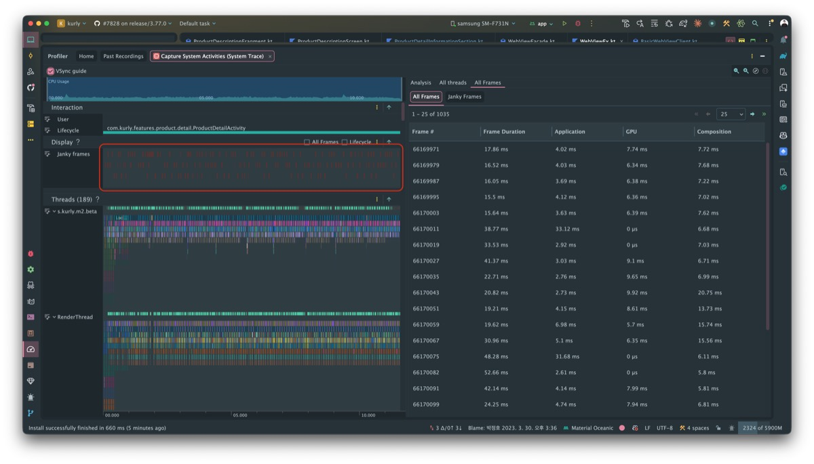
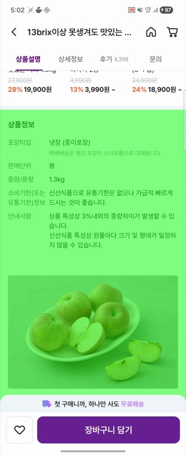
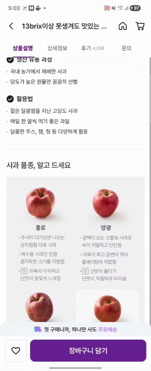

코드는 그대로였다
코드는 그대로였다. 상품상세 상품설명 탭을 담는 스크롤 컨테이너만 RecyclerView에서 LazyColumn으로 바꿨을 뿐인데, 스크롤이 버벅이기 시작했다. WebView도, 그 WebView에 걸어둔 LAYER_TYPE_HARDWARE 설정도 손대지 않았다. 그런데 결과는 갈렸다.
이 글은 그 역설을 추적한 기록이다. 같은 WebView, 같은 하드웨어 레이어인데 왜 컨테이너에 따라 한쪽은 부드럽고 한쪽은 끊겼는가. 먼저 결론을 한 줄로 박아두자.
Android Studio Profiler와 Perfetto 트레이스로 그 한 줄을 어떻게 증명했는지, 그리고 RecyclerView와 LazyColumn의 렌더링 모델이 정확히 어디서 갈라지는지 따라가 본다.
증상: 마이그레이션이 깨운 jank
상품설명 탭은 원래 RecyclerView + ComposeView 혼합 구조였다. 이미지·정보·리뷰·추천 같은 섹션이 각각 ViewHolder였고, 맨 아래 상품설명 영역은 WebView를 품은 ViewHolder였다. 이 화면을 통째로 LazyColumn 기반으로 옮겼다. 보이는 결과물과 기능은 동일했다.
전환 직후 QA가 아니라 스크롤 손맛에서 먼저 티가 났다. 상품설명 영역을 지날 때 눈에 띄게 끊겼다. Android Studio Profiler의 System Trace로 잡아 보니 Janky Frame이 빨갛게 도배돼 있었다.

상단 Display 트랙의 빨간 구간이 모두 vsync 마감을 놓친 프레임이다. 오른쪽 프레임 표의 Frame Duration이 16.6ms를 줄줄이 넘긴다.
수치로 보면 더 분명하다. 전체 프레임의 60.6%가 janky였고, 앱이 직접 유발한 Self Jank가 178건, 평균 프레임 시간은 23.77ms로 60fps 마감선(16.6ms)을 한참 넘겼다. 여기서 중요한 건 단 하나다. 바뀐 변수는 컨테이너뿐이라는 사실. 원인은 WebView 안이 아니라, WebView를 담는 방식 어딘가에 있었다.
리팩토링 전: RecyclerView 시절
그렇다면 RecyclerView 시절의 WebView는 어떻게 그려지고 있었을까. 옛 구조에서 상품설명 WebView는 ProductDetailInformationLayerViewHolder 안에서 초기화됐고, 거기엔 이미 하드웨어 레이어가 걸려 있었다.
// (구) RecyclerView ViewHolder — 상품설명 WebView 초기화
private fun initView() {
webViewFacade.initWebView(binding.webView, View.LAYER_TYPE_HARDWARE)
webViewFacade.initJavascriptInterfaces(binding.webView)
}이 LAYER_TYPE_HARDWARE는 사연이 있는 코드다. WebView에 하드웨어 가속을 의도하고 걸어둔 레이어인데, 바로 이 레이어가 한때 저사양 단말에서 앱을 죽인 적이 있다. GPU가 허용하는 최대 텍스처 크기가 16383인 단말에서, 레이어 높이가 64의 배수로 올림되며 16384가 되어 IllegalStateException: Unable to create layer — requested size 16384, max size 16383으로 크래시가 1만 건 넘게 터졌다.
그 크래시의 추적과 우회 과정은 별도 글에 정리돼 있다. 이 글은 그 후속편에 해당한다.
→ 1px이 앱을 죽였다 — 저사양 단말 WebView 크래시 1만 건의 원인과 대응
당시의 해법은 레이어를 없애는 게 아니라 디바이스로 분기하는 것이었다. 단말의 GL_MAX_TEXTURE_SIZE를 EGL로 직접 조회하는 LayerTypeInspector를 만들어, 텍스처 크기가 64의 배수가 아닌 위험 단말(예: 16383)만 LAYER_TYPE_NONE으로 떨구고 나머지 대다수 단말은 LAYER_TYPE_HARDWARE를 그대로 유지했다.[3]
그래서 짚어둘 점은 이거다. RecyclerView 시절에도 대다수 단말의 이 WebView엔 똑같이 하드웨어 레이어가 걸려 있었다. 하지만 그때 문제는 일부 단말의 "크래시"였지 "스크롤 버벅임"이 아니었다. RecyclerView 스크롤 자체는 매끄러웠다. 같은 레이어가, 컨테이너가 바뀌자 이번엔 크래시가 아니라 jank라는 새 얼굴로 돌아온 셈이다.
조사: Perfetto로 범인 찾기
Profiler가 "프레임이 느리다"까지 알려줬다면, 그 프레임 안에서 무엇이 시간을 먹는지는 Perfetto 트레이스로 들어가야 보인다. 개선 전/후 트레이스를 떠서 두 갈래로 좁혔다. 먼저 actual_frame_timeline_slice의 jank_tag로 앱이 책임지는 Self Jank를 셌고, 그다음 RenderThread의 슬라이스를 시간순으로 분해했다.
RenderThread를 펼치자 한 슬라이스가 눈에 들어왔다.
// RenderThread 슬라이스 (개선 전, 스크롤 구간)
drawLayer [WebView] 1080.0 x 13907.0
호출 1,026회 · 합계 5,464.6ms · 평균 5.33ms · 최대 37.57msdrawLayer는 하드웨어 레이어의 내용을 GPU 텍스처(FBO)에 다시 그리는 작업이다. 크기를 보자. 1080 × 13907px — 상품설명 페이지가 WRAP_CONTENT로 펼쳐진 전체 높이다. 이 한 장짜리 거대한 텍스처를, 스크롤하는 동안 프레임당 약 1번씩(1,026회 ≈ 프레임 수) 다시 그리고 있었다.
RenderThread의 Drawing 루트 슬라이스 합계가 8,872ms → 3,250ms로 줄었는데, 그 감소분(약 5,622ms)의 97%가 이 drawLayer[WebView] 하나의 제거로 설명됐다.
슬라이스의 부모-자식 관계(ancestor_slice)로도 확인했다. 레이어를 채우던 skia 연산(FillRectOp 등)이 모두 이 drawLayer의 자손이었고, 함께 사라졌다.
범인은 잡았다. 그런데 의문은 더 커진다. 같은 WebView, 같은 레이어인데 RecyclerView에선 이 비용이 문제로 보이지 않았다. 무엇이 달랐나.
왜 컨테이너가 결과를 바꿨나
답은 하드웨어 레이어의 정의 자체에 있다. Android 공식 문서는 레이어가 언제 다시 그려지는지를 이렇게 못 박는다.[1]
"Once a view is rendered into a layer, its drawing code does not have to be executed until the view calls
invalidate()."
즉 하드웨어 레이어는 "내용은 고정이고 위치·투명도 같은 변형만 바뀔 때" 빛을 본다. translationX/Y, alpha, rotation 같은 속성은 레이어를 다시 그리지 않고 GPU가 캐시된 텍스처를 합성만 하면 되기 때문이다. 그래서 공식 문서는 하드웨어 레이어를 "애니메이션이 도는 동안만" 켜라고 권고한다. 영구적으로 켜두는 용도가 아니다.
그런데 이 WebView는 정확히 그 반대다. 크기·위치만 바뀌는 정적인 뷰가 아니라, chromium의 GL functor가 매 프레임 invalidate()를 던지는 살아 있는 표면이다. 결정적 증거가 있다 — 스크롤을 멈추고 가만히 둬도 show_layers_updates를 켜면 이 WebView 영역은 계속 초록색으로 깜빡인다. 컨테이너가 RecyclerView든 LazyColumn이든 똑같다.
실제로 RecyclerView 트레이스를 떠 보면 분명하다. RecyclerView에서도 drawLayer[WebView]는 1,692프레임 중 1,690회 — 사실상 매 프레임 실행되고 있었다. 처음에 세웠던 "RecyclerView는 레이어를 재사용한다"는 가설은 틀렸다.
| 지표 (둘 다 HARDWARE) | RecyclerView | LazyColumn |
|---|---|---|
| drawLayer[WebView] 횟수 | 1,690 / 1,692f | 1,026 / 1,036f |
| drawLayer p50 (중앙값) | 1.01ms | 1.99ms |
| drawLayer p90 | 1.80ms | 28.45ms |
| Janky 프레임 비율 | 32.8% | 60.6% |
| Self Jank | 83 | 178 |
그러니 진짜 답은 "재사용이냐 재래스터화냐"가 아니다. 둘 다 매 프레임 재래스터화하지만, 그 비용의 분포가 다르다. RecyclerView에선 재래스터의 90%가 1.8ms 이하로 값싸고(거의 캐시처럼 동작), 비싼 건 상위 1%(p99 31ms)뿐이다. 반면 LazyColumn에선 p90이 28ms — 재래스터의 10% 이상이 16.6ms 버짓을 통째로 넘긴다. 같은 레이어를 RecyclerView는 대체로 싸게, LazyColumn은 자주 비싸게 다시 그린 것이다.
그래서 RecyclerView도 "멀쩡"하진 않았다 — 32.8%가 이미 janky였다. 다만 비싼 재래스터가 드물어 체감 임계 아래에 머물렀을 뿐이다. LazyColumn 마이그레이션이 비싼 재래스터의 빈도를 끌어올리자, 줄곧 거기 있던 낭비가 비로소 jank로 터져 나온 것이다.
측정된 사실 — "두 컨테이너 모두 매 프레임 재래스터화", "RecyclerView도 32.8% janky"는 각 트레이스에서 직접 측정한 값이다.
통제의 한계 — 두 캡처는 스크롤 강도가 완전히 같진 않다. 평균은 유휴 프레임에 흔들리지만, p50/p90 분포는 캡처 길이에 강건해 "비용이 꼬리(p90)에서 갈린다"는 결론은 유지된다.
가장 엄밀한 비교 — 같은 컨테이너(LazyColumn)에서의 HARDWARE→NONE이다. 그것이 drawLayer를 0으로 만들고 jank를 절반으로 줄였다(다음 절).
남은 질문 — "왜 LazyColumn 재래스터가 비싼가"라는 내부 메커니즘. 유력 후보는 Compose의 매 프레임 interop redraw 오버헤드[2]이며, 정밀 확인은 후속 과제다.
수정: 레이어와 인프라를 함께 걷어내다
원인이 "이 WebView에서 처음부터 캐시가 아니었던 하드웨어 레이어"라면, 해법은 단순하다. 레이어를 없애는 것이다. 변경은 한 줄이었다.
webViewFacade.initWebView(
this,
LayerTypeInspector.getType()
)webViewFacade.initWebView(
this,
View.LAYER_TYPE_NONE
)그리고 레이어가 사라지면서, 그 레이어를 저사양 단말에서 안전하게 쓰려고 디바이스를 분기하던 장치도 통째로 불필요해졌다. 앞서 크래시 대응 때 만들었던 LayerTypeInspector(EGL로 최대 텍스처 크기를 조회하던 115줄)와 그 진단 로깅이 함께 삭제됐다. 모든 단말을 NONE으로 보내니, 텍스처 크기로 단말을 가르던 분기 자체가 의미를 잃었기 때문이다. 전편에서 만든 안전장치를 후속편에서 걷어낸 셈이다. PR 전체로는 +4 / −120줄 — 추가가 아니라 덜어냄으로 끝난 변경이다.
LAYER_TYPE_NONE으로 바꿔도 WebView의 GPU 가속은 꺼지지 않는다. 가속은 윈도우/앱 레벨에서 유지되며, 개선 후 트레이스에도 chromium의 자체 GPU 경로인 WebViewFunctor::drawGl은 그대로 살아 있다. 우리가 없앤 것은 그 위에 덧씌워진 중복 캐싱 레이어일 뿐이다.검증: 세 각도, 같은 결론
"버벅임이 줄어든 것 같다"로는 부족했다. 서로 독립적인 세 방법으로 같은 결론이 나오는지 확인했다.
① Perfetto 트레이스 — 두 번 측정
다른 세션에서 두 번 떠도 결론은 동일하게 재현됐다.
| 지표 | 1차 전 → 후 | 2차 전 → 후 |
|---|---|---|
| Janky 프레임 비율 | 60.6% → 26.3% | 73.5% → 43.2% |
| Self Jank (앱 책임) | 178 → 23 -87% | 147 → 20 -86% |
| 평균 프레임 시간 | 23.77 → 12.97ms | 21.28 → 11.33ms |
| drawLayer[WebView] | 5,464ms → 0 | 4,091ms → 0 |
두 측정 모두에서 drawLayer[WebView]는 완전히 사라졌고, Self Jank는 86~87% 줄었다.[4]
② 육안 — 하드웨어 레이어 업데이트 표시
가장 직관적인 확인은 눈으로 보는 것이다. 개발자 옵션의 "하드웨어 레이어 업데이트 표시"(debug.hwui.show_layers_updates)를 켜면, 레이어가 재래스터화될 때마다 초록색으로 플래시한다.

스크롤 내내 WebView 영역만 초록색으로 깜빡인다 = 매 프레임 재래스터화.

하드웨어 레이어가 없으니 초록 플래시도 없다 = 재래스터화 대상 자체가 사라짐.
화면 위쪽 상품 카드나 아래 버튼은 초록색이 아닌데 WebView 영역만 물든다는 점이 핵심이다. 그 영역만 매 프레임 다시 그려지고 있었다는 뜻이다.[5]
Perfetto가 측정값으로, 육안 오버레이가 실시간 동작으로 같은 지점을 가리켰다. 세 각도가 한 결론으로 모였다.
최적화에는 유효기간이 있다
이 사건의 진짜 교훈은 효과 없는 최적화는 임계 아래에 숨어 있다가 환경이 바뀌면 드러난다는 것이다. 하드웨어 레이어는 매 프레임 무효화되는 이 WebView에서 RecyclerView 시절부터 줄곧 순수 오버헤드였다. 다만 그 비용이 체감 임계 아래라 "멀쩡해 보였을" 뿐이고, LazyColumn 마이그레이션이 비용을 조금 더 얹자 비로소 jank로 터져 나왔다. 즉 마이그레이션이 버그를 만든 게 아니라, 줄곧 있던 낭비를 드러낸 것이다.
그래서 일반화할 수 있는 규칙은 이렇다.
- 1Compose 스크롤 컨테이너(
LazyColumn등) 안의 무거운AndroidView(WebView·MapView 등)에는LAYER_TYPE_HARDWARE를 걸지 않는다. 하드웨어 레이어는 "애니메이션 동안만"이 공식 권고다. - 2XML → Compose 마이그레이션 시, View 시절의 성능 최적화를 그대로 들고 오지 말고 새 런타임에서 다시 측정한다. 한 환경에서 "문제없어 보이던" 최적화가 실은 효과 없는 오버헤드이고, 다른 환경에서 비로소 드러날 수 있다.
- 3스크롤 버벅임은 RenderThread를 의심한다.
drawLayer슬라이스가 프레임마다 보이면, 그 레이어는 캐시가 아니라 비용이다.
남은 과제도 있다. 레이어를 걷어낸 뒤에도 개선 후 트레이스엔 약 2.5%의 Self Jank가 남아 있는데, 이는 스크롤 중 Compose recomposition 비용으로 이번 건과는 다른 줄기다. 그건 다음 이야기로 미뤄둔다.
매 프레임 무효화되는 WebView 위의 하드웨어 레이어는 RecyclerView·LazyColumn 양쪽에서 매 프레임 재래스터화되는 순수 오버헤드였다(RecyclerView 32.8% · LazyColumn 60.6% janky). LazyColumn이 그 비용을 체감 임계 위로 밀어올렸을 뿐이고, 레이어를 제거(LAYER_TYPE_NONE)하자 Self Jank가 178 → 23으로 떨어졌다. 한 환경에서 멀쩡해 보이던 최적화는 환경이 바뀌면 다시 측정해야 한다.